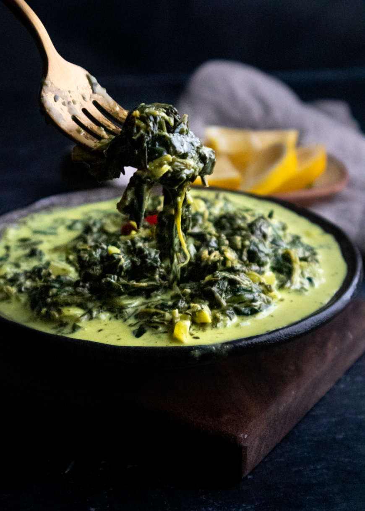

<!DOCTYPE html>
<html lang="en">
<head>
    <meta charset="UTF-8">
    <meta http-equiv="X-UA-Compatible" content="IE=edge">
    <meta name="viewport" content="width=device-width, initial-scale=1.0">
    <title>Gollai Hågun Suni</title>
    <link rel="stylesheet" href="../styles.css">
</html>
    <body>
        <div class-="content">
          <div><a href="../index.html"class="btn">Bahay(home)</a></div>
            <h1>Gollai Hågun Suni</h1>
            <div class="section">
                
            </div>
            <h3>Description</h3>
            <div class="section">
                <p>
                    Gollai Hågun Suni is a Chamoru dish originally made with taro leaves and coconut milk. 
                    Taro leaves are a little harder to find (unless you grow it or know someone) and, growing up, 
                    I have always had it with spinach instead. To best describe this dish, it is often eaten as a side 
                    dish next to the meats and fish. In Filipino culture, this is very much comparable to Laing (pronounced as lah-ing). 
                    Only, in Gollai Hågun Suni, traditionally the dish is naturally vegan and, I can honestly say, wholesome.”.
                </p>
            </div>
            <h3>Ingredients:</h3>
            <div class="section">
                <ul>
                    <li>½ tbsp olive oil or any oil for cooking</li>
                    <li>⅓ medium (⅓ cup) yellow onions diced</li>
                    <li>4 cloves garlic finely minced</li>
                    <li>½ tsp ground turmeric</li>
                    <li>1 tsp kosher salt</li>
                    <li>1 tsp ground black pepper</li>
                    <li>2 small (1 tsp) red hot pepper</li>
                    <li>4 cups (470g) thawed frozen spinach excess liquids squeezed out</li>
                    <li>2 cups (13.5 fl oz) full fat coconut milk</li>
                    <li>4 tbsp fresh lemon juice juice of (1) lemon</li>
                    <li>½ tbsp smoked paprika</li>
                </ul>
            </div>
            <h3>Steps:</h3>
            <div class="section">
                <ol>
                    <li>Preheat a sauce pan to medium heat and coat with a oil. Once pan and oil is heated, sauté the onions and garlic together. Toss until aromatics are fragrant and shimmering.</li>
                    <li>Season onion and garlic mixture with salt, pepper, and turmeric. Add the hot pepper and mix until well combined.</li>
                    <li>Add the spinach and stir. Then pour the coconut milk and stir all ingredients together. Allow it to simmer for about 2-3 minutes to let the flavors set.</li>
                    <li>Turn off the heat. Add the lemon juice to finish. Season it with a hint of smoked paprika to taste (this is optional).</li>
                    <li>Transfer in a container and allow it to chill for thirty minutes. Best served after being chilled in the refrigerator like a cold side salad.</li>
                </ol>
            </div>
        </div>
    </body>
</html>